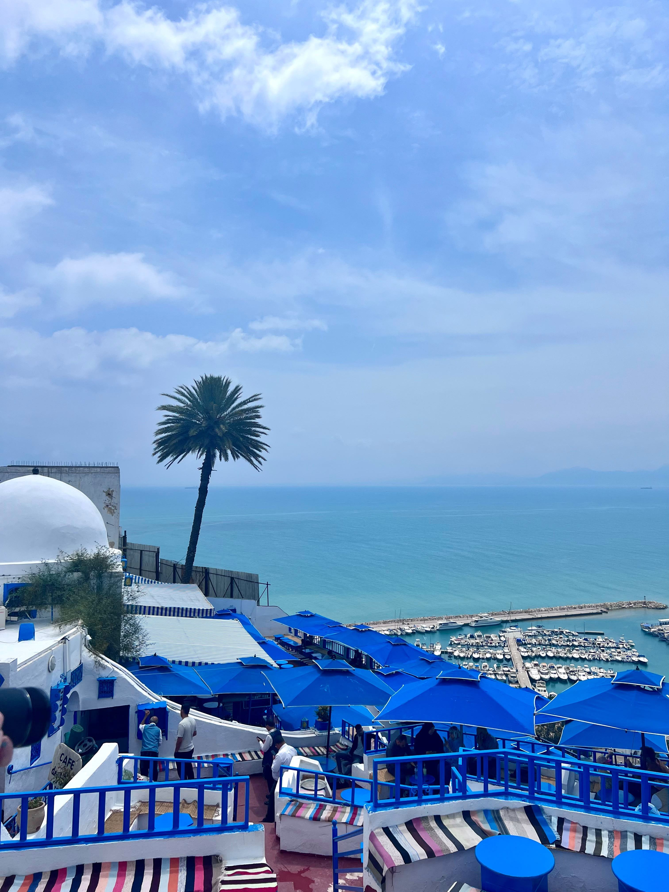

Sousse
Sousse is the perfect combination of history, culture, and seaside fun.
You can explore its historic medina, wander through traditional markets, and enjoy the nearby beaches.
Sousse is the perfect combination of history, culture, and seaside fun.
You can explore its historic medina, wander through traditional markets, and enjoy the nearby beaches.

Sidi Bou Said is famous for its white buildings, bright blue doors, and charming cobblestone streets.
You can spend your afternoon exploring little shops, enjoying a mint tea at a traditional café, and admiring the breathtaking coastal views.

Hergla is a charming coastal town in Tunisia, known for its peaceful atmosphere, traditional whitewashed houses, and beautiful Mediterranean views. It's a lovely destination for travelers who want to discover a quieter side of Tunisia, away from the busy tourist resorts. It’s only 25km away from Sousse!
With its narrow streets, fishing boats, local cafés, and seaside scenery, Hergla offers a glimpse into everyday Tunisian coastal life.